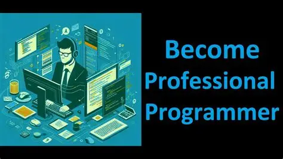
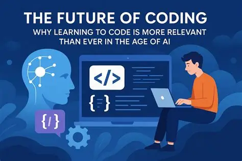

Becoming a professional programmer is one of the things I would like to achieve in the future. I want to learn more about programming, improve my skills, and understand how to create different websites, apps, and other projects. I know that becoming a good programmer takes time, patience, and a lot of practice. First, I want to learn the basics and become familiar with different programming languages. After that, I would like to work on my own projects and gain more experience. I also want to learn how to solve problems, write better code, and find new ways to improve my work. I know that there will be challenges along the way, but I am ready to learn from my mistakes and keep trying. My goal is to become confident in my abilities and be able to create useful and creative things with programming. In the future, I hope to work on bigger projects, learn new technologies, and turn my interest in programming into something I can do professionally.

Start your coding journey and take the first step toward building a brighter future. Programming allows you to turn creative ideas into real projects, solve problems, and develop valuable skills for the digital world. Whether you want to create beautiful websites, develop useful applications, or become a professional software developer, everything begins with learning the basics and practicing regularly. Learning to code takes time, patience, and determination. You will make mistakes, encounter challenges, and sometimes struggle to find the right solution, but every experience helps you improve. Start with simple projects, explore HTML and CSS, experiment with different designs, and gradually challenge yourself to build more advanced websites and applications. Technology is constantly evolving, which means there will always be something new to discover. Stay curious, learn from your mistakes, and never stop improving your skills. With dedication and creativity, you can transform your passion into something meaningful and open the door to exciting opportunities. Remember, every professional programmer was once a beginner. You do not need to know everything to get started; you simply need the motivation to learn and the courage to try. Keep practicing, believe in your abilities, and take small steps toward your goals every day. Start Coding. Keep Learning. Build Your Future. shkurtoje tekstin në gjysmëbëje tekstin më të thjeshtëpërshtate për një faqe fillestare
